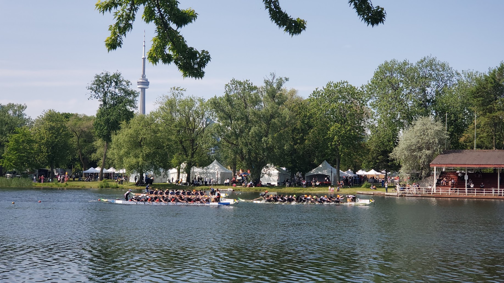
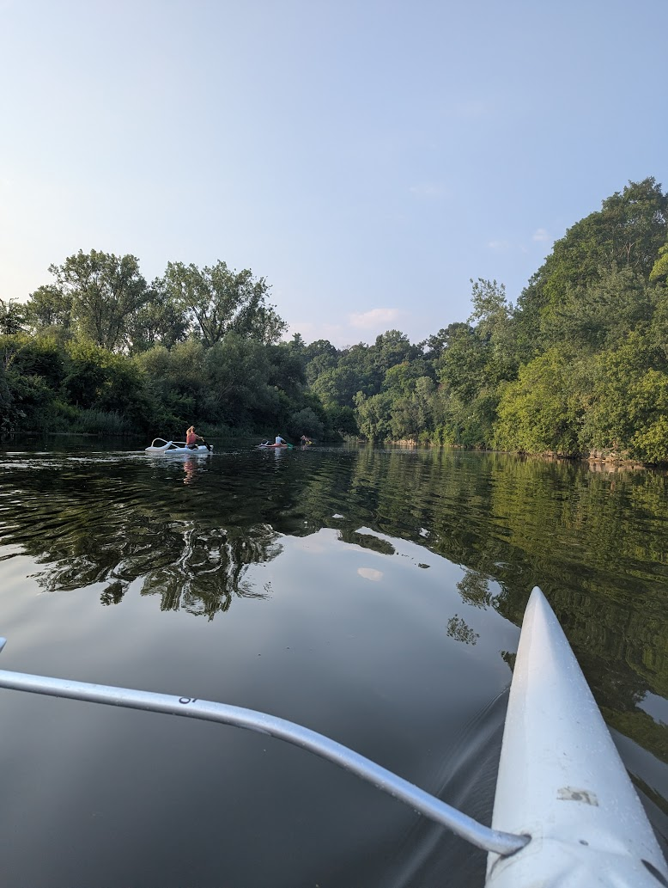

Home
Hello! I'm Jadon, a second-year Engineering Science student majoring in Machine Intelligence at the University of Toronto. My current interest is in working with machine learning in medical imaging. Course descriptions for required program courses I've taken can be viewed here. In addition to the core courses, I have audited or taken courses in physiology, embedded systems, and biomedical imaging with a focus on MRI. Course notes for additional courses can be viewed here.
Outside of school, I am currently working with the University of Toronto Biomedical Engineering Design Team (UTBIOME) to build a vortex droplet generator as part of an AST microscope.
I am also a member of the Iron Dragons dragon boat team, which placed second nationally at the 2025 Canadian National Championships.
On good weather weekends, I work as a line pilot at the Borden Cadet Flying Site, as well as part-time as a ground school instructor with Air Cadets Canada. I enjoy playing intramural softball and, despite being from near Toronto, I'm an avid Habs fan.

